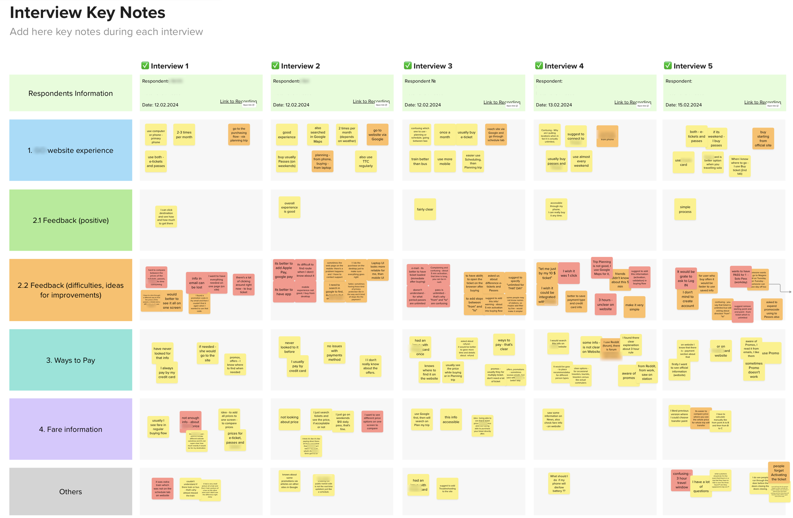
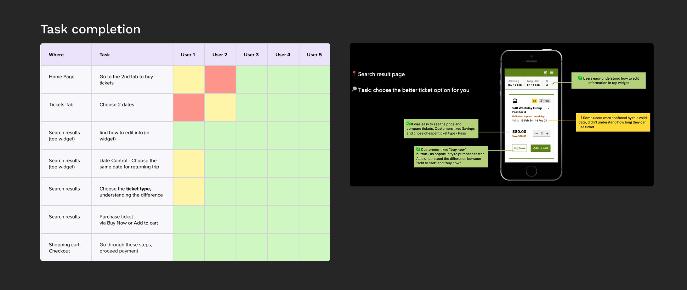
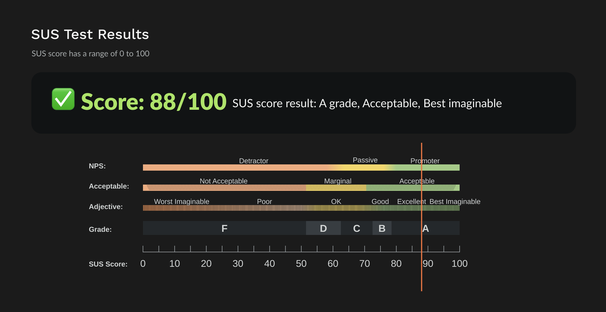
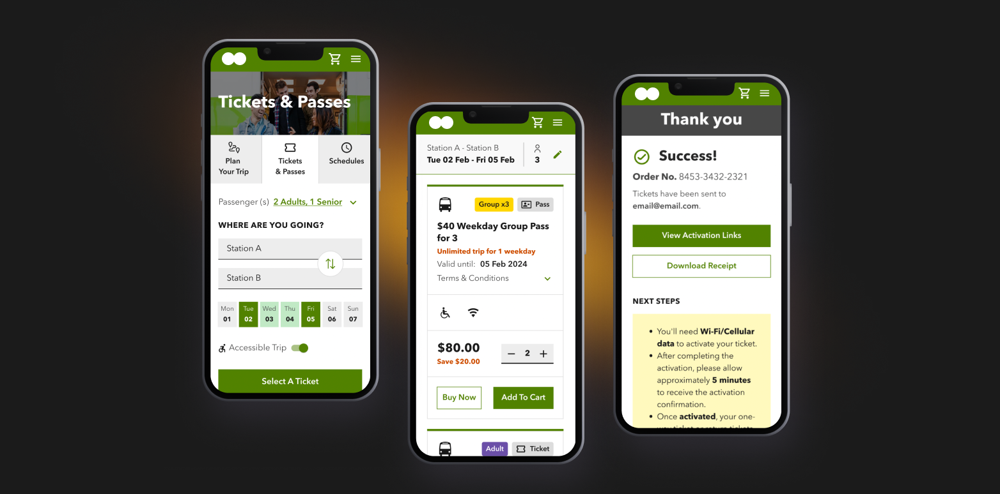

Increasing Conversion for Ticket Purchase
E-commerce · Research
* Client names and some visuals are anonymized under NDA.

Project goals
This project focused on improving the user experience of a worldwide transportation company’s e-commerce site, where users can buy tickets online for rides.
The main goals of this project were to enhance usability, increase user satisfaction, and boost conversion rates for the web e-commerce site through research-based changes.
Design process steps
To ensure our improvements would enhance the user experience, we conducted user interviews followed by usability testing after creating the design concept.
- Onboarding, current state and requirements analysis, backlog priorities review
- UX audit to identify gaps and areas for improvement
- User interviews
- Ideation and concept generation
- Planning and conducting usability testing
- UX report, presenting to stakeholders, design updates and approval
- Final delivery & design hand-off
My role
- UX: from discovery to validated design solutions, with a strong focus on conversion optimization
- Defined research strategy, participated in user interviews and usability testing, and translated insights into actionable product decisions
- Identified key friction points in the purchase flow and prioritized improvements based on impact vs effort
- Designed and validated new user purchase flow and interaction patterns, collaborating closely with product and engineering teams
- Facilitated stakeholder alignment by presenting research insights and design rationale
User interviews
The interviews focused on gathering deep insights to inform our design decisions. We talked to 5 current users aged 16 and above who regularly buy tickets on the website, selected through a pre-screening survey.
Using affinity mapping, we grouped similar insights and revealed patterns in user behavior and preferences. I then presented the findings and recommendations to product managers in a report. The interviews helped us define:
- positive user feedback about the ticket purchase flow
- user pain points
- user needs and requests
- habits and specific use cases

Testing the concept
Usability testing helped us identify issues, gather feedback and make informed design decisions. We ran 5 sessions of 30 minutes, each with 7 tasks on a prototype. Overall, the new concept was easy to use, with only minor difficulties at the start of the flow.
Goals
- Validate the mobile design concept of the purchase flow
- Check usability and find gaps
- Understand how users choose between e-tickets and passes
Session structure
- Questions about background and past ticket-buying experience
- Tasks on the prototype (happy path of buying a ticket)
- Feedback on the hardest parts and overall impressions
- SUS questionnaire
Usability testing results were presented to highlight key findings:
positive feedback, user needs, pain points, habits and specific use cases, and other interesting insights.

Table to reflect results: green – task successfully completed, yellow – partially, red – task failed.
Each screen was analyzed in the report, and all feedback or user concerns were documented
SUS questionnaire
After the main testing sessions, we asked respondents to fill in the SUS test. The SUS questionnaire, with 5 response options for respondents, can effectively differentiate between usable and unusable systems. SUS has proved to be a valuable evaluation tool, being robust and reliable.
The System Usability Scale (SUS) test is a widely used method for assessing the usability of software or websites through a 10-item questionnaire.

Mobile First Approach
We chose a mobile-first approach because 80% of users accessed the site from their phones. This meant designing the purchase flow for the smallest screen first and then scaling it up to desktop. We kept one clear primary action per screen, made touch targets comfortable to tap on the go, and simplified ticket selection, especially for one-day trips. We then validated the mobile concept in usability testing to make sure the new flow felt clear and easy to use.

Result
- Reduced friction in the ticket purchase flow by simplifying key steps and improving clarity of actions
- Increased conversion by addressing critical drop-off points identified during usability testing
- Improved mobile experience through a mobile-first redesign approach
- Delivered validated, development-ready design for purchase flow